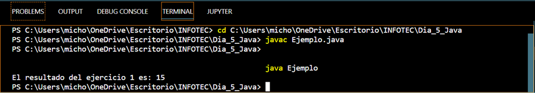
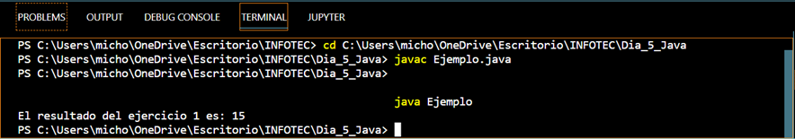

Char
Se utiliza para almacenar caracteres individuales. Utiliza 16 bits y se usa la codificación UTF-16 de Unicode.
Ejemplo:
Al usar esta palabra en Java se declara como sigue
public class EjemploChar { public static void main(String[] args){ char a = 'a'; //Para imprimir este valor usamos la siguiente linea System.out.println("Valor de la variable char: " + ch); }} //El resultado mostrado en la consola es: Valor de la variable char: a
Boolean
Tiene la finalidad de facilitar el trabajo con valores "verdadero/falso", resultantes por regla general de evaluar expresiones. Los dos valores posibles de este tipo son true y false
Ejemplo:
Al usar esta palabra en Java se declara como sigue
public class EjemploBoolean { public static void main(String[] args){ boolean x; x = false; System.out.println("La variable x: " + x); } }//El resultado en consola será: La variable x es false
While
Un bucle while permite repetir la ejecución de un grupo de instrucciones mientras se cumpla una condición.
Ejemplo:
Al usar esta palabra en Java se declara como sigue
public class EjemploWhile{ public static void main(String[] args){ int i=0; while(i<8) { System.out.print(i); i++; }}}//El resultado en consola será: 0 1 2 3 4 5 6 7
Float
Tipo de dato que representa la cantidad de 4 bytes, son utilizados para representar números decimales, también como números enteros con orden de magnitud más grande.
Ejemplo:
Al usar esta palabra en Java se declara como sigue
public class EjemploFloat { public static void main(String[] args){ float base, altura; base = 2.25; altura = 3; area = base * altura; System.out.println("El area es: " + area); } }//El resultado en consola será: El area es: 6.75
If
En esta estructura se evalua una condición y en caso de que se cumpla se ejecuta el contenido entre las llaves {} o en caso de que se omitan se ejecuta el código hasta el primer «;» por lo tanto si no se usan los {} la condición aplica solo a la siguiente instrucción al if.
Ejemplo:
Al usar esta palabra en Java se declara como sigue
public class EjemploIf { public static void main(String[] args){ int calificación = 9; if(calificación > 6){ System.out.println("Promedio: " + calificación); } } } //El resultado en consola será: Promedio: 9;
¿Cómo compilar un archivo .java desde la terminal?
Para poder compilar un archivo .java se siguen los siguientes pasos:
Tomaremos como ejemplo el siguiente Script:
1) Abrir la terminal del compilador usado, o bien el símbolo
del sistema (mcd).
2) Con el comando cd nos situamos en la dirección en donde
se encuentra el archivo a compilar.
3) Compilar el programa Java con el comando javac
seguido del nombre del archivo con la terminación .java
4) Se creará un nuevo archivo con el mismo nombre que el archivo
java pero con extensión .class
5) Usar el comando java para ejecutar el archivo

¿Cómo capturar datos introducidos desde el teclado en java?
Para capturar datos ingresados por teclado se hace uso de la clase Scanner.
A continuación se presenta un ejemplo del código y como se hace uso de esta clase:

El resultado en la terminal es el siguiente:
Elaborado por: Cecilia Vianey Muñoz Chávez
Para poder compilar un archivo .java se siguen los siguientes pasos:
Tomaremos como ejemplo el siguiente Script:
1) Abrir la terminal del compilador usado, o bien el símbolo
del sistema (mcd).
2) Con el comando cd nos situamos en la dirección en donde
se encuentra el archivo a compilar.
3) Compilar el programa Java con el comando javac
seguido del nombre del archivo con la terminación .java
4) Se creará un nuevo archivo con el mismo nombre que el archivo
java pero con extensión .class
5) Usar el comando java para ejecutar el archivo

Para capturar datos ingresados por teclado se hace uso de la clase Scanner.
A continuación se presenta un ejemplo del código y como se hace uso de esta clase:
El resultado en la terminal es el siguiente:
Elaborado por: Cecilia Vianey Muñoz Chávez